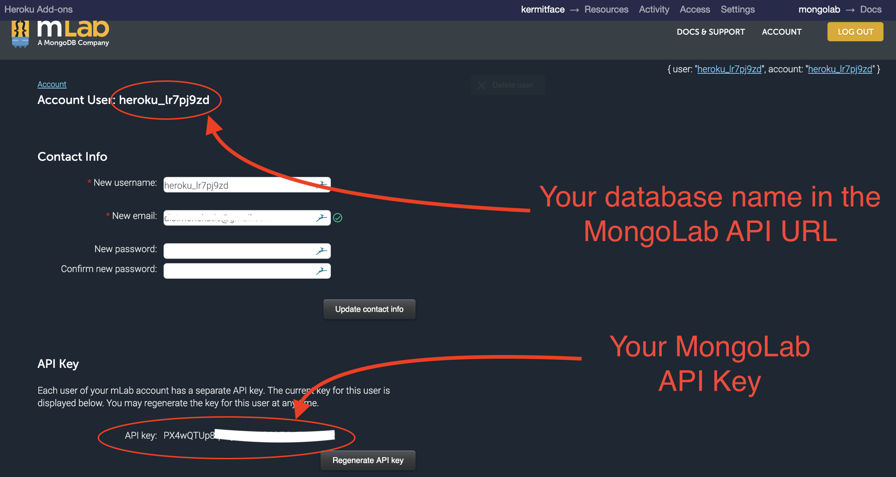
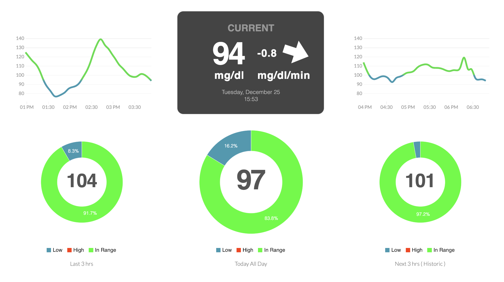
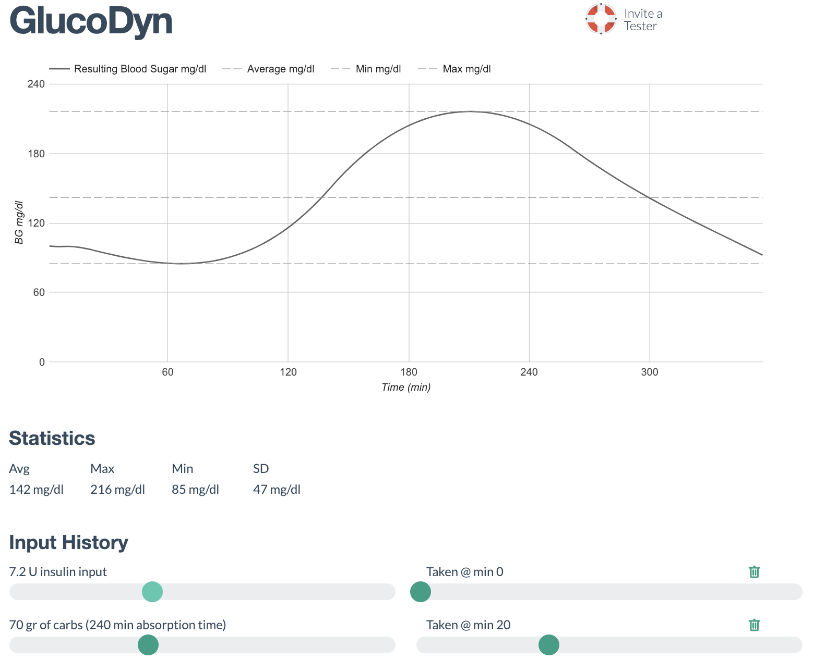

Perceptus⌁
Perceptus is a website and set of free tools developed by Kenneth Stack and Gustavo Munoz, two active members of the DIY community. Perceptus provides two tools particularly helpful for Loop users; Dash and GlucoDyn. As a side note, Gustavo has an excellent Spanish Tedx Talk about building his own DIY looping algorithm. Kenneth is also the brains behind NSApple watch app.
Dash⌁
For Loop users with Nightscout integration running, Dash can provide an alternate view and data analysis for the Loop data stored in your Nightscout's mLab database. (Note: mLab used to be called MongoLab, still the same intended reference)
To set up your Dash integration, you will need to:
-
Signup for a Perceptus account here
-
Provide your mLab database information
mLab database information⌁
Assuming you have a basic Heroku account to host your Nightscout website, you can access your mLab information as shown in the screenshots below. (Users who manually setup their own mLab databases as part of Azure accounts will need to access their mLab database manually using their login and account information.)
Login to your Heroku account to start the process, and then that will take you to your mLab information.


Your mLab database name and API Key can be found on the same page, as shown below. Copy and paste these bits of information into your User Settings in Dash.
The format for the MongoLab API URL string is: https://api.mlab.com/api/1/databases/your-database-name/collections/entries where you are replacing the your-database-name part with your info from the first circled area shown below.

Dash data presentation⌁
Dash provides multiple views of your mlab information, and the data is updated live as your Nightscout data updates too. While there are some constraints (cannot set your own low/high range limits), the data views are very useful for identifying difficult times of day or difficult days of the week.



GlucoDyn⌁
GlucoDyn was created to educate people with T1D and their caregivers about blood glucose dynamics. Each day people with T1D make decisions about what and when to eat, and how much insulin to use to cover carbohydrates effect. It can be difficult to visualize what is happening throughout the day as carbohydrate absorption raises blood glucose and insulin reduces it – particularly when multiple events interact with one another.
GlucoDyn uses calculations similar to an insulin pump’s bolus wizard to create graphs of blood glucose versus time, based on your inputs of carb and insulin events. The user can enter carbohydrates, boluses, and temporary basals, and GlucoDyn calculates the effect on blood glucose over time. GlucoDyn also allows the user to “slide” the events around once they have been entered – allowing you to see what would have happened to your blood glucose curve if you had bloused earlier or eaten a different amount of carbohydrates “on the fly” – the curves change as you move the sliders.
Seeing the curves and understanding the effects of bolus timing, carbohydrate absorption rate glycemic index (GI) value, temporary basal timing and rates, etc. can help users with their overall understanding of T1D and its management.
Originally, Loop used the same carbohydrate absorption and insulin models as Glucodyn uses. Those have since been updated in Loop with dynamic carbohydrate absorption and exponential curves for insulin. Even with those changes, the GlucoDyn tool can still provide users an excellent tool to visualize how small changes in bolusing can affect trends in blood glucose. For example, it’s quite interesting to see the effect of pre-bolusing. By delaying the carb intake by say 20 minutes, you can visualize the reduction of the maximum blood glucose. But, you have to be careful – before the carbohydrates have time to absorb insulin is working, and the minimum blood glucose will also drop. These are the kinds of tradeoffs that are critical to the management of T1D, and thankfully are automated by Loop's smart bolusing based on carbohydrate absorption estimates.
